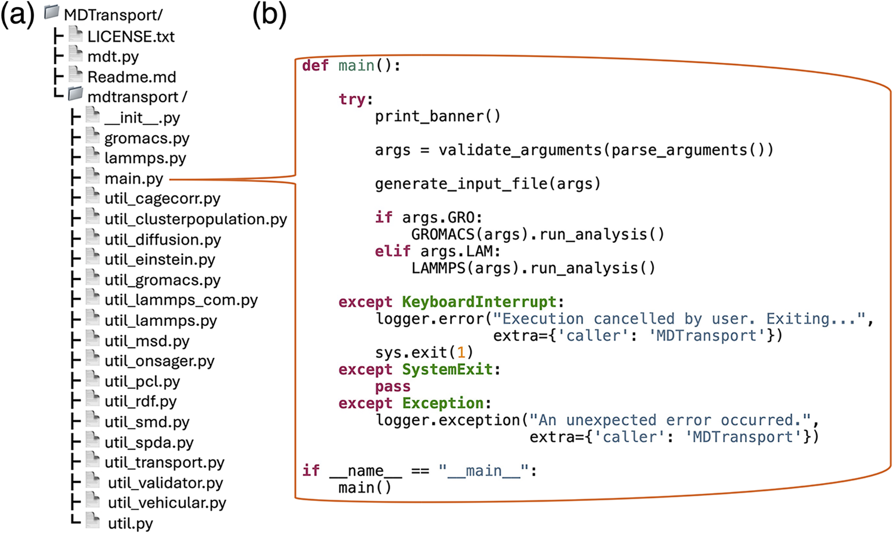
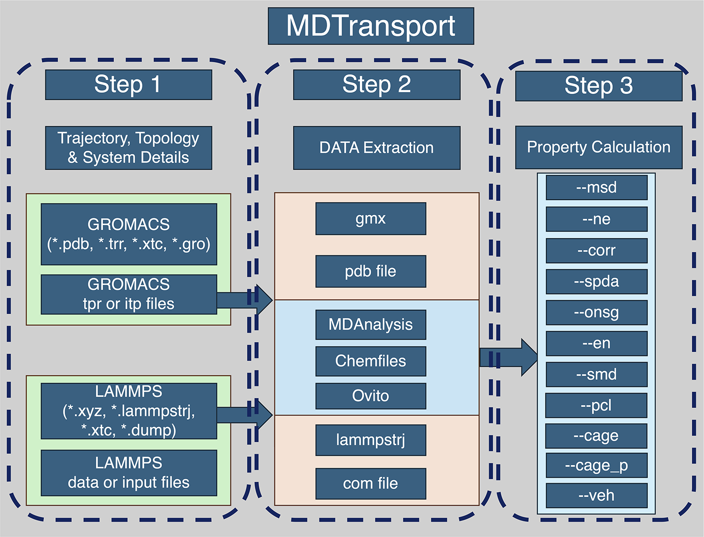
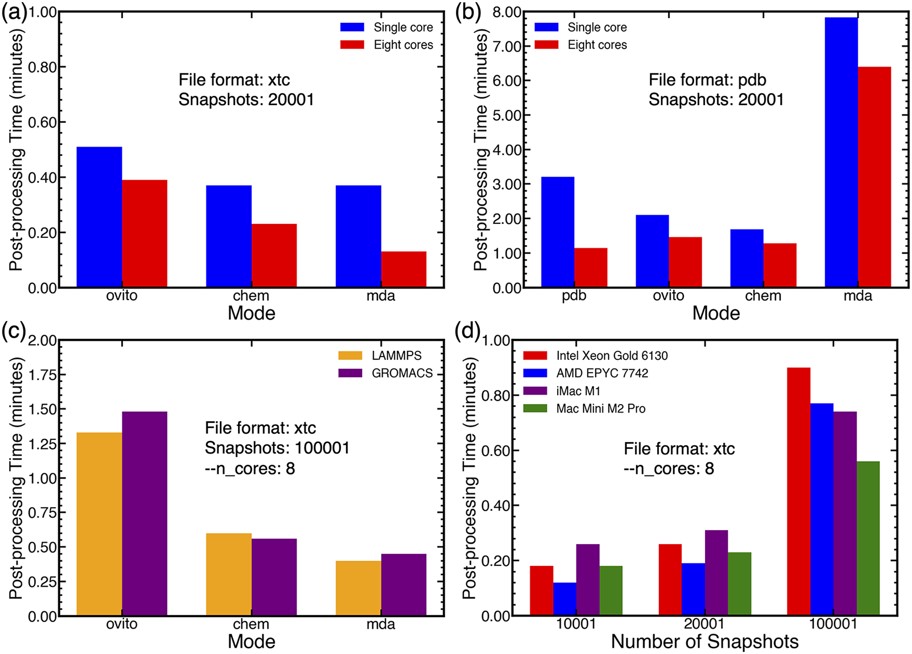
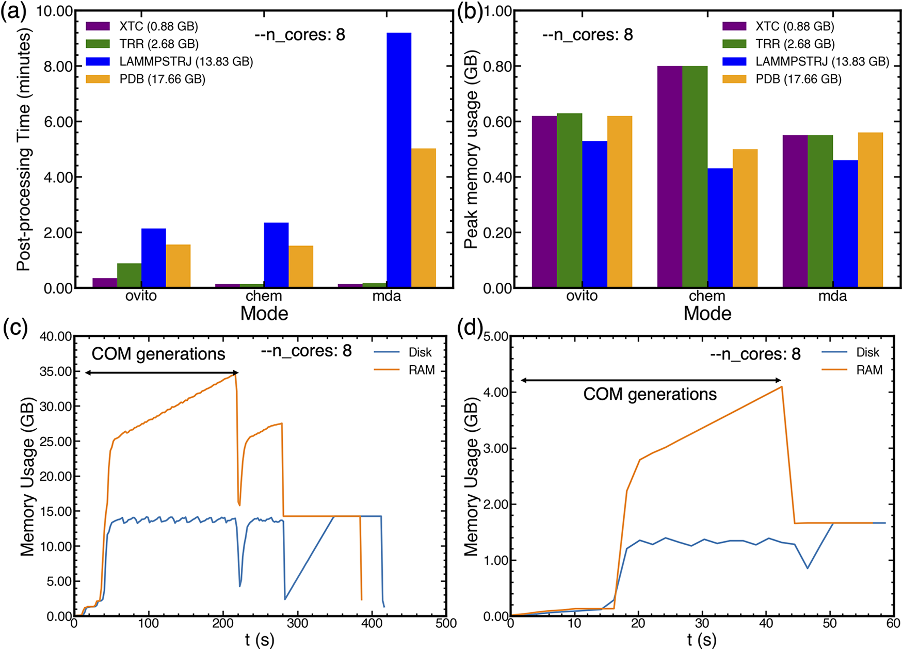

A Modular, Open-Source, Extensible Python Tool for Computing Transport Properties from GROMACS and LAMMPS Simulations
MDTransport is a comprehensive postprocessing framework for molecular dynamics trajectories from GROMACS and LAMMPS. It computes a wide range of transport properties and advanced structural-dynamical analyses through a unified, user-accessible interface.


MSD-based with adaptive fitting (OLS/WLS/GLS); direction-specific (x, y, z); fragment-level analysis
Nernst–Einstein, Einstein, and Einstein–Helfand formalisms; self + cross-correlation decomposition
Ideal (Nernst–Einstein) and real (Einstein, with ion–ion correlations)
Self and cross terms; convertible to ionic conductivity via σ = Nₐe²zᵢzⱼLᵢⱼ
Multicomponent diffusion coefficients; resistance matrix for conductivity
Self, intracomponent (cation–cation, anion–anion), intercomponent (cation–anion) cross-correlations via Einstein and EH formalisms
Proximal (within solvation shell) vs. distant contributions; fixed & variable identity approaches; auto RDF-based cutoff
Intermittent cage persistence via Heaviside function; multi-exponential fitting; auto RDF-derived cutoff
Nearest-neighbor tracking; intermittent reforming allowed; first-point exclusion for robust fitting
Population distribution within solvation shells; agglomeration vs. solvation diagnostics
Vehicular diffusion vs. structural hopping classification via lD,ij / ls ratio
--ana).tpr/.gro/.pdb/.itp; LAMMPS via --species flagInteractive stepwise prompts for novices; single-command flags for experts; -h help, -e examples
Cross-platform GUI for local execution (available via Shah Research Group website)
Browser-based analysis, no installation required (hosted at shahresearchgroup.org)
Start instantly with a temporary session — no account required. Secure sessions last up to 20 minutes. Load sample files or upload your own. All data is deleted after the session ends.
For users who prefer local execution, the web interface provides download links for the desktop application and source code, with seamless transition between cloud and local workflows.
Interactive help/chat feature integrated into the web interface for real-time assistance with analysis setup, parameter selection, and result interpretation.
Direct access to source code (GitHub), PyPI/Conda packages, comprehensive documentation, tutorial notebooks, and example datasets — all from the web portal.
Optional account creation for persistent sessions, saved analysis configurations, history tracking, and collaboration features. Login via institutional or email credentials.
Secure HTTPS sessions; uploaded trajectories processed server-side; automatic data deletion after session expiry; no persistent storage without explicit user consent.
Access URL: https://shahresearchgroup.org → Navigate to MDTransport section for web interface, downloads, and documentation.
Backend Parsers: MDAnalysis, Chemfiles, OVITO, built-in PDB parser — supports .xtc, .trr, .tpr, .gro, .pdb, .lammpstrj, .dcd, .data
Performance: Multiprocessing (all cores by default, configurable via --n_cores); disk-backed mode (--disk) reduces peak memory ~50%; FFT-accelerated O(N log N) correlation calculations


| Property | MDTransport | GROMACS | MDAnalysis | PyLAT | STACIE | TRAVIS |
|---|---|---|---|---|---|---|
| MSD & Self-Diffusion | ✓ | ✓ | ✓ | ✓ | ✓ | ✓ |
| Ionic Conductivity (Nernst–Einstein) | ✓ | ✓ | ✗ | ✓ | ✓ | ✗ |
| Ionic Conductivity (Einstein) | ✓ | ✗ | ✗ | ✗ | ✓ | ✗ |
| Ion–Ion Correlations | ✓ | ✗ | ✗ | ✗ | ✓ | ✗ |
| Spatial Decomposition (SPDA) | ✓ | ✗ | ✗ | ✗ | ✗ | ✗ |
| Cage/Pair Lifetimes | ✓ | ✗ | ✗ | ✗ | ✗ | ✗ |
| Cluster Analysis | ✓ | ✗ | ✗ | ✗ | ✗ | ✗ |
| Transport Mechanism | ✓ | ✗ | ✗ | ✗ | ✗ | ✗ |
| Onsager Coefficients | ✓ | ✗ | ✗ | ✗ | ✗ | ✗ |
| Stefan–Maxwell Diffusivity | ✓ | ✗ | ✗ | ✗ | ✗ | ✗ |
| GROMACS + LAMMPS Support | ✓ | ✓ | ✓ | ✗ | ✗ | ✗ |
Table adapted from paper Table 2. MDTransport is the only tool covering all listed properties across both major MD engines.
Existing postprocessing tools for MD trajectories are fragmented, engine-specific, and lack advanced transport analyses — creating a barrier for reproducible, high-throughput materials screening.
PyLAT → LAMMPS only; GROMACS tools → GROMACS only. Researchers using both engines must master multiple toolchains.
Most tools compute only MSD/diffusion and basic RDFs. Advanced analyses (cage lifetimes, SPDA, transport mechanism, Onsager coefficients) require custom scripting.
MDAnalysis, MDTraj, Chemfiles, OVITO demand Python proficiency. PyLAT has steep learning curve. Non-programmers excluded.
Manual time-window selection, no automated convergence, memory bottlenecks, single-engine focus — impractical for screening campaigns.
User-chosen fitting windows introduce bias. No standardized best-practice enforcement across tools.
MDTraj/OVITO lack native charge extraction from .tpr/.data files — critical for conductivity.
Analyzes β = d(ln MSD)/d(ln t) over ≥8 ns windows (or ½ trajectory); selects window minimizing ∑|β−1| across all species; warns if tolerance (δ=0.075) exceeded
Position autocorrelation and dipole autocorrelation via FFT → O(N log N) scaling; enables full-trajectory sliding windows for EH formalism
Collective dipole displacement instead of pairwise sums → massive speedup for cross-correlations & Onsager coefficients; enables long sliding windows
Each property in utils_<property>.py; new properties added by creating new class — no core modification needed
"Further development is underway to incorporate alternative methods to compute transport properties efficiently. Additionally, future work will involve introducing functionality by integrating additional transport properties and extending postprocessing capabilities to ab initio molecular dynamics packages such as CP2K."
Velocity autocorrelation-based conductivity & viscosity; complement Einstein/EH approaches; noise reduction via spectral methods (cf. KUTE, SporTran)
Thermal conductivity via Green–Kubo / EH heat flux autocorrelation; non-equilibrium MD (NEMD) support
Stress tensor autocorrelation (Green–Kubo); periodic perturbation (NEMD); connect to Stokes–Einstein relation
Block bootstrap, Bayesian inference (cf. Kinisi, STACIE); automated convergence diagnostics; confidence intervals on all reported properties
Parse CP2K trajectories (.xyz, .ener, .restart); handle variable cell geometries; DFT-level charge analysis
Extend engine compatibility beyond GROMACS/LAMMPS; unified topology handling via OpenMM XML / AMBER prmtop
Formal import mdtransport programmatic API (beyond CLI); Jupyter notebook integration; type hints, full docstrings
CuPy / JAX backends for FFT & correlation computations; large-system scaling (>1M atoms)
Dask / MPI support for multi-node HPC; trajectory sharding; distributed reduction of correlation arrays
Embedded Plotly/Dash dashboards in web UI; live MSD/RDF/correlation plots; export publication-ready figures
FireWorks / AiiDA / Parsl plugins; automatic metadata capture (provenance); REST API for web service
Support for charge equilibration (QEq), DFT-derived charges (RESP, CHELPG), topological quantization (Grasselli–Baroni)
Metadynamics/umbrella sampling postprocessing; free energy surfaces from biased trajectories
Slab geometry support; directional diffusion (⊥/∥ interface); surface conductivity; electrochemical double layer
Drude oscillator / AMOEBA support; induced dipole contributions to conductivity; EH formalism extension
Train ML models on MDTransport outputs for rapid property prediction; active learning loops for screening
Electric field-driven NEMD; electro-osmotic flow; transient current response; frequency-dependent conductivity
mdtransport.plugins).cif, .json for materials databases (MP, OQMD, NOMAD)MDTransport aims to become the standard postprocessing backbone for computational electrolyte and transport materials discovery — bridging the gap between raw MD trajectories and publication-ready, reproducible transport property datasets across all major simulation engines and accuracy tiers (classical → ab initio).